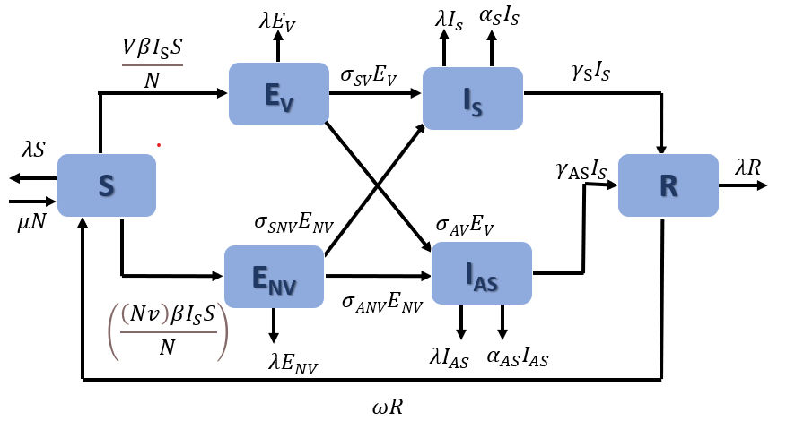

| Mathematical Modelling of Covid-19 using modified SEIRS Model | |||||||||||||||||||||||||||||||||||||||||||||||||||||||||||
|
Default parameters
|
Input values
|
||||||||||||||||||||||||||||||||||||||||||||||||||||||||||
|
SEIRS Compartmental model Mathematical representations of infectious diseases include compartment-based SEIR and SEIRS models. These models are represented using coupled differential equations that capture the flow of populations from one compartment to another. While these models have been used for several infectious diseases such as HIV/AIDS, tuberculosis, Dengue fever, and COVID-19, the models do not generally incorporate compartments for vaccinated populations, asymptomatic infections, and the possibility of reinfection. This modified Susceptible-Exposed-Infected-Recovered-Susceptible (SEIRS) compartment model for COVID-19 disease incorporates the compartments for exposed vaccinated and non-vaccinated populations, and those with symptomatic and asymptomatic infections. In this work, we present a modified SEIRS model that consists of six compartments:
 Transition diagram of modified six compartmental SEIRS model to predict the infections of disease spread. The modified SEIRS model can be represented using a set of coupled differential equations: 𝑑𝑠/𝑑𝑡 = 𝜇𝑁+ 𝜔𝑅 − 𝜆𝑆 − ((𝑉𝛽𝐼S 𝑆)/𝑁) − (((𝑁𝑉)𝛽𝐼S 𝑆)/𝑁) (𝑑𝐸V)/𝑑𝑡 = ((𝑉𝛽𝐼S𝑆)/𝑁) − (𝜆 + 𝜎𝑆𝑉 + 𝜎𝐴𝑉)𝐸V (𝑑𝐸NV)/𝑑𝑡 = (((𝑁𝑉)𝛽𝐼S𝑆)/𝑁) − (𝜆 + 𝜎𝑆𝑁𝑉 + 𝜎𝐴𝑁𝑉)𝐸NV (𝑑𝐼S)/𝑑𝑡 = 𝜎SV𝐸V + 𝜎𝑆𝑁𝑉 𝐸𝑁𝑉 − (𝜆 + 𝛼S + 𝛾𝑆)𝐼S (𝑑𝐼AS)/𝑑𝑡 = 𝜎𝐴𝑉𝐸V + 𝜎𝐴𝑁𝑉𝐸𝑁𝑉 − (𝜆 + 𝛼𝐴𝑆 + 𝛾𝐴𝑆)𝐼𝐴𝑆 (𝑑𝑅)/𝑑𝑡 = 𝛾S𝐼S + 𝛾𝐴𝑆𝐼𝐴𝑆 − (𝜆+𝜔)𝑅 where |
|||||||||||||||||||||||||||||||||||||||||||||||||||||||||||
|